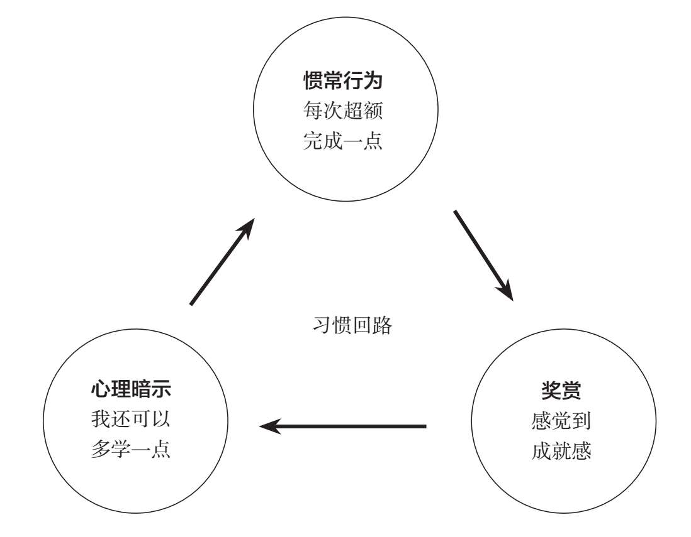

曾国藩曾有一句名言被梁启超辑录在《曾文正公嘉言钞》一书中：“学贵初有决定不移之志，中有勇猛精进之心，末有坚贞永固之力。”其意是指，唯有克服浮躁和急功近利，对学习目标持之以恒，才能学有所成。
学习并非一件速成之事，几乎所有学习目的的达成都需要我们经历一个自然的学习曲线。但当下更多人倾向于追求立竿见影的学习效果——看完一本书便希望能够立即明白一个道理，听完一套音频课便希望能够立刻讲一口流利的英语，学会一个技能便希望能够马上用它带来实质性的收益……
一旦我们制订的学习计划没有在短时间内获得期望的效果，就会启动，熄火，再启动，再熄火，最后一无所成，这便是大部分人的常态。与此同时，“太枯燥没兴趣”“太难了没信心”“加班了没时间”“生病了没精力”等，也都顺其自然变成了我们美化自己半途而废的“合理性”理由。
如果对即时快感的追求决定了我们无法仅仅依靠意志力对长线目标持之以恒，那么如何在意志力之外建立一个坚持长线学习的支持系统，就成为了一个值得深度探讨的问题。
系统思考专家德内拉·梅多斯曾经说过：系统结构是行为的根源，而系统行为的体现是随时间而发生的一系列事件。学习这件事也一样，如果我们想知道如何才能坚持长线学习，应该首先研究是什么样的系统问题导致我们无法坚持。在我看来，这个问题分别与学习的三个系统相关：
系统一：动力系统。打个比方，如果一台机器的动力系统出现问题，比如汽车没油了、发动机坏了，那么机器一定会罢工。人也一样，如果我们学习的“动力系统”出现问题，稍微遇到点儿困难，我们就容易半途而废。
我在前文中分享过这样的观点：获得胜任感和成就感有助于我们将学习行为持续下去。众所周知，长线学习任务通常都比较艰巨，一旦我们的精力和时间不足以应付这些复杂的学习任务，就会产生强烈的挫败感，进而导致学习动力衰减。因动力系统不足导致半途而废，本质上是我们无法在长线学习中及时获得胜任感和成就感。
系统二：控制系统。控制系统好比一辆车的刹车、油门、方向盘……这些操纵部件一旦出现问题，车子便会失控。人也一样，我们需要一个稳定的控制系统帮助自己把学习行为维持下去。如果说机器依靠各个机械部件之间的作用力保持平稳运行，那么人类控制系统的正常运行便需要依靠理性、感性和习惯互相作用，因为理性、感性和习惯是维持人类行为的最常见部件。
我们每个人的身体里都有两个自我，一个是感性自我，另一个是理性自我。积极心理学家乔纳森·海特曾用一个有趣的比喻来描述理性和感性之间的关系。他说：人的感性就像一头大象，而理性则像骑象人。骑象人骑在大象背上，手里握着缰绳，看似是人在指挥大象，但事实上，人的力量微不足道。一旦人和大象发生冲突，人通常拗不过大象。
以很多人早起学习英语为例。根据我们制订的学习计划，每当早上闹铃响起，理性便会提醒我们该立刻起床背单词，但与此同时，我们身体里的另一面——感性却会不断地告诉我们“被窝很温暖，眼皮很沉重，继续睡下去很舒服，明天多背几个单词便是……”当理性和感性发生冲突时，虽然骑象人很想指引大象走上正确的道路，但大象总会不由自主地转向当下令人愉快的感官享受。
从这个意义上讲，理性和感性都无法很好地帮助我们控制学习行为，真正有用的控制系统只能是习惯。我们每个人的人生其实都是无数种习惯的集合：早晨起床，我们习惯刷牙洗脸，梳头更衣；出门上班，我们习惯经过熟悉的道路乘坐地铁，或者搭乘公交；到达办公室后，我们习惯打开电脑查收邮件；下班后，我们又常常习惯跟家人聊天，辅导孩子的功课。有统计显示，我们每天的活动中，有超过40%的部分都是习惯的产物，而不是自己主动的决策。习惯存在于我们的潜意识中，占据了生活的方方面面，让我们能够在不依赖意志的情况下，把自己想要持续学习这件事引导得像每天刷牙般轻松。
系统三：保障系统。依然以汽车为例，保障系统相当于一台汽车的安全气囊、安全带、保险杠……它们负责提供基本安全保障。类比学习这件事，我们也需要一套完善的保障系统（包含时间、精力、环境等）确保学习计划正常执行。
例如，假设你想利用下班后的空余时间学习自媒体运营，并计划每天撰写一篇文章，那么你至少需要这样一套保障系统：首先，你要保证每天都有足够的时间和精力，为了保证精力充沛，你要改掉熬夜的习惯，还要放弃一些休闲娱乐活动；其次，你需要一个合适的创作环境，躺在床上或者一边看电视一边构思文章，这显然会影响创作；最后，你还需要长期保持学习和阅读习惯，以便写作时能够言之有物。时间、精力、空间，甚至是氛围，这些平时容易被忽略却至关重要的因素，共同组成了维持学习行为的保障系统。
几乎所有人在学习中都会遇到以上三个系统中的某个问题。比如，即使我们保证了动力系统和控制系统的正常运行，一旦突然有团体性的娱乐活动需要占用我们的下班时间，或者当天精力不济，保障系统就随时有可能会将我们的学习计划叫停。面对步调总是难以一致的三个系统，如何才能持之以恒继续自己的学习计划呢？
马拉松运动员也许能帮助我们找到长期坚持的方法。我观看过很多马拉松冠军的采访资料，发现他们身上都有一个惊人的相似之处——马拉松冠军选手在比赛的过程中，大都会将全程路段分解成许多段去完成，他们每次只会盯着眼前的一小段目标，而非一直盯着终点。随着一个又一个小目标的完成，他们最终跑完了马拉松全程。
加拿大心理学家皮尔斯·斯蒂尔认为这个方法同样适用于长线学习，并以此提炼出了“成功螺旋法”，帮助学习者解决三个系统的不稳定问题。皮尔斯·斯蒂尔指出：如果我们能为自己设定出一连串挑战，并且这些挑战目标都是可达到的，那么我们就会充满动力。因为每完成一个小挑战，达成一个小目标，我们就能获得一定程度的胜任感，而胜任感能带领我们向更高的追求迈进。循环反复下去，我们就有可能养成坚持学习的习惯。
具体讲，“成功螺旋法”分为以下两步：
第一步：把复杂的长线学习任务拆分成一个个小目标，以获得胜任感。
以爬山为例，一个大的学习目标就像一座高山，当我们气喘吁吁才爬到半山腰时，难免想放弃。但是不爬到山顶，又怎能看到山顶的美景呢？因此，累得爬不动时，你不妨把“爬到山顶”这个任务拆分成一些小目标。比如，以30个台阶为一个小目标，爬过之后稍加休息，再接着完成30个台阶。随着一个个小目标逐渐完成，在胜任感的推动下，你最终就能到达山顶。
不过，值得注意的是，为了避免产生挫败感，制造胜任感，我们要尽可能在一开始便将任务拆分到自己完全有能力达成的程度，比如一次只背3个英文单词，只看5分钟视频课程，只做10个俯卧撑，只看1页书等。
第二步：试着每次超额完成小目标。
为什么要超额完成小目标呢？因为超额完成任务会带来成就感。如果我们原计划每天阅读一页书，读完一页后，因为初始目标足够小，我们就有可能接着往下看，不知不觉便会超额完成看一页书的小目标，成就感也会油然而生。
日复一日完成以上两个步骤，不仅会增强我们的学习动力系统，还会潜移默化帮助我们养成良好的学习习惯，稳定控制系统。查尔斯·都希格在《习惯的力量》一书中提到，习惯一般是这样产生的：首先，我们收到一种心理暗示，然后产生惯常行为，接着获得奖赏。因为受到奖赏，下次我们再收到同样暗示的时候，又会产生惯常行为，继而又受到赞赏……如此循环，便能形成习惯回路，从而养成一种习惯。

以学习为例，当我们将学习目标拆分成很多个足够小的任务后，每完成一次小任务，我们的大脑就会产生一种心理暗示：“这个任务太简单了，也许我可以多学一点儿。”这个心理暗示会让我们不自觉地再阅读几页书、背诵几个单词，从而形成“惯常行为”；而每次超额完成任务又会让我们产生成就感，从而获得奖赏。
如此循环反复，通过习惯回路的引导，从“我必须要读完××页书”到“我挺喜欢读书”，从每天早上提醒自己“应该坚持早起背单词”到“自觉起床背单词”，我们对学习这件事便逐渐产生“认同”，并变成一种“自觉”。
学习习惯养成后，保障系统依然有可能出现问题——我们每天的精力、时间和状态都不一样，很难保证每天都能按时按量完成学习计划。但是，世界上本来也不存在百分之百稳定的保障系统，我们对保障系统最好的评估是去测算它的概率，而非盯着它可能会出现的问题。
想一想，假设你在一年之内的大部分时间都完成了锻炼计划并顺利减掉了多余的脂肪，你还会为偶尔几天没有坚持运动而自责吗？假设在一个月之内你能够坚持学习20多天并获得了明显的进步，你还需要因为有5天没学习而感到失败吗？持之以恒从来不代表百分之百完成，而是坚持下去，提高我们完成的比例。所以，请允许我再一次提醒：我们大可不必在长线学习中为了偶尔几次没有完成的学习计划而过于自责。
值得注意的是，“成功螺旋法”还有一个非常重要的提示：一旦我们能够轻易完成当下的小任务，就应该设置难度更大的学习目标。在对学习任务进行重新拆分时，我们只需要注意做好以下衡量：随着学习能力的提高，这个任务依然是在我们的能力范围之内。然后，不断循环“成功螺旋法”的两个步骤即可。随着完成的任务不断像螺旋一样上升，我们逐渐就会“进步成瘾”，越学越自信，半途而废的次数也会越来越少，从而实现“螺旋式的成功”。毕竟，当“半程马拉松”对你来说已经变得非常轻松时，你怎会放弃尝试跑完全程呢？
学习无捷径，方法有高下。对长期目标是否能够持之以恒，是预测一个人能否成功的重要因素。但是，把成功寄托在难以自控的意志力上，只会让成功率变得微乎其微。持续的学习行为来自良好的习惯，而非一时的激情和行动。如果我们能够启动习惯的自动运作程序，持之以恒就会成为一种自然行动。而在行动之前，我们需要知道，所谓“坚持”本身，就是一种可以科学养成的习惯。